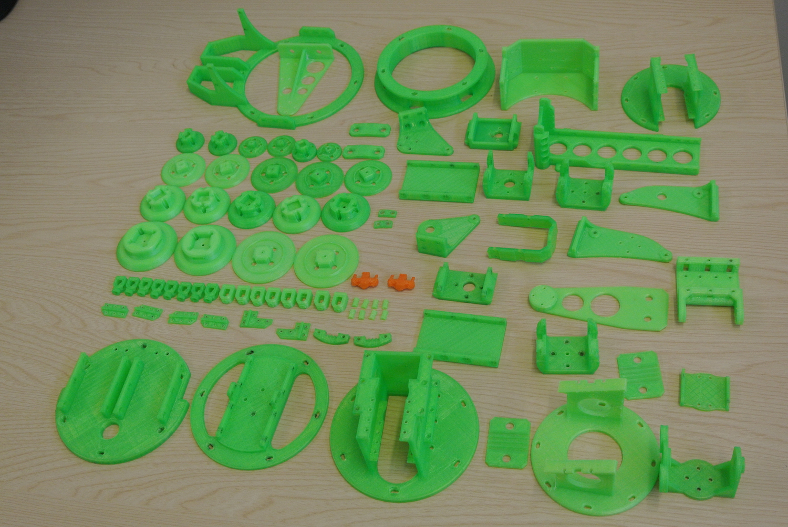

Printing the GummiArm needs less than a 1 kg of PLA plastic. Most of parts are printed with 20% infill, but we recommand you to print some of them (indicated by **) with 40% infill. Even with this small amount of plastic, it's easy to loose itself in all the parts composing the soft robot arm. That's why we propose you, in this section to name all the pieces and to find the adequate FreeCAD file to print them. We can distinguish 4 parts oin the soft robot arm : the head , the shoulder, the upper arm and the lower arm.
